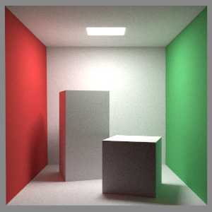
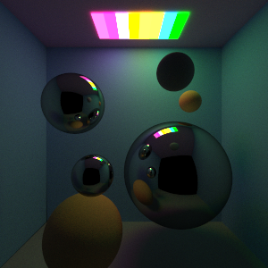

Technical Projects
Learning Algorithms
Class Project
- Implemented value iteration, policy iteration, and Q-learning algorithms
- Below video shows a crawler learning to move forward using the Q-learning algorithm
2019
Two View Stereo Algorithm
Class Project
- Implemented two stereo algorithms: greedy stereo matching and dynamic programming based stereo estimation
2019
Original image 1

Original image 2
Result of the greedy algorithm for stereo estimation
Result of the dynamic programming algorithm for stereo estimation
Panorama Creation
Class Project
- Created a panorama from three separate images
- Implemented computing the homography between two images and a backwards warping algorithm using the homography
- Used the SIFT Keypoints to implement the RANSAC function
- Implemented the alpha blending algorithm
- Used all the above the stitch the three images together
2019
Visual result of the RANSAC matchings
Output of the three images stitched into a panorama
Half-Edge Data Structure and Mesh Simplification Implementation
Class Project
- Implemented a Half-Edge data structure for triangle meshes
- Simplified triangle meshes with a mesh simplification algorithm using quadrics
2019

Original image (69630 faces)
Simplified 1 time (23814 faces)
Simplified 2 times (17406 faces)
Simplified 3 times (8702 faces)
Simplified 4 times (4350 faces)
Simplified 5 times (2174 faces)
Simplified 6 times (1086 faces)
Simplified 7 times (542 faces)
Ray Tracer
Class Project
- Created a Ray Tracer using Monte Carlo rendering algorithm in java for COMS 4160
- Implemented three ray tracers: direct illumination, global illumination with brute force termination, and global illumination using Russian Roulette algorithm for termination
2019
Direct Illumination

Global Illumination with Brute Force Termination
Global Illumination with Brute Force Termination
Global Illumination with Russian Roulette Termination (Probability of 0.75)
Direct Illumination
Global Illumination with Russian Roulette Termination

Global Illumination with reflective spheres
Global Illumination with reflective spheres
×
❮
❯
A couple more rendered images with 100 samples using global illumination.

×
❮
❯
Shader Implementation
Class Project
- Implemented 6 different shaders using java and GLSL for COMS 4160
- Implemented the Gourand shader, Texture-modulated Smooth shader, checkerboard texture, wireframe texture, CEL Shader, and Gooch Shader
2019
Foreign Meadow
Class Project
- Created a foreign meadow using java and GLSL for COMS 4160
- Programmed the geometric transformation matrices and experimented with camera view
- Designed the objects in the meadow and programmed their animation including butterfly movement and movement of each blade of grass
2019
Network Server
Class Project
- Used netcat to create a program that allows remote access to a database lookup program
2018
Identifying Speech Bubbles: Creating Identifying Speech Bubbles for Characters in Video
Individual Project
- Created a program in python to detect when characters are talking and create automatic subtitles for that character
- Implemented Google WebRTC Voice Activity Detector, Google Speech Recognition for voice detection
- Implemented OpenCV and Haar Cascades and Dlib facial landmark detection libraries for mouth detection
- Succeeded in detecting moving mouths and the corresponding spoken words
2017
Othello Game
- Implemented the Alpha-beta pruning algorithm for the computer at a depth of 6 to play the Othello Game
2017
Fractal Flower
- Created a flower using fractals in python
2016